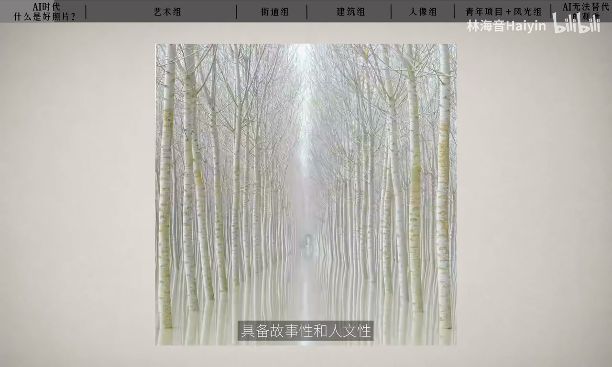
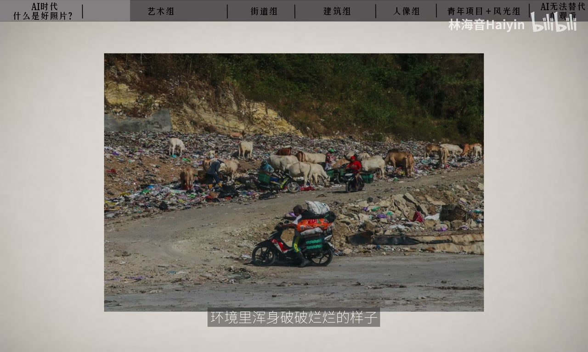
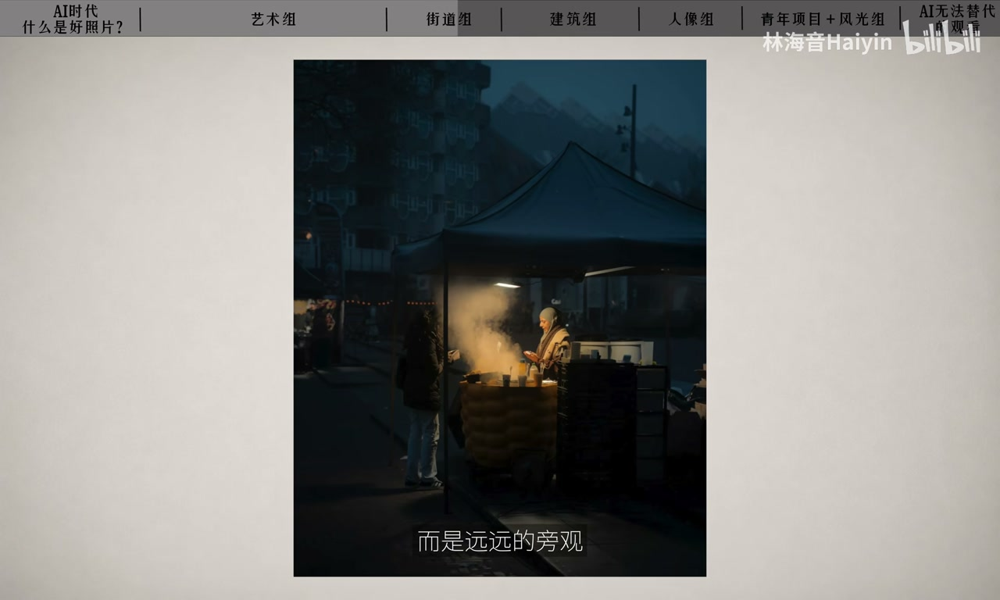
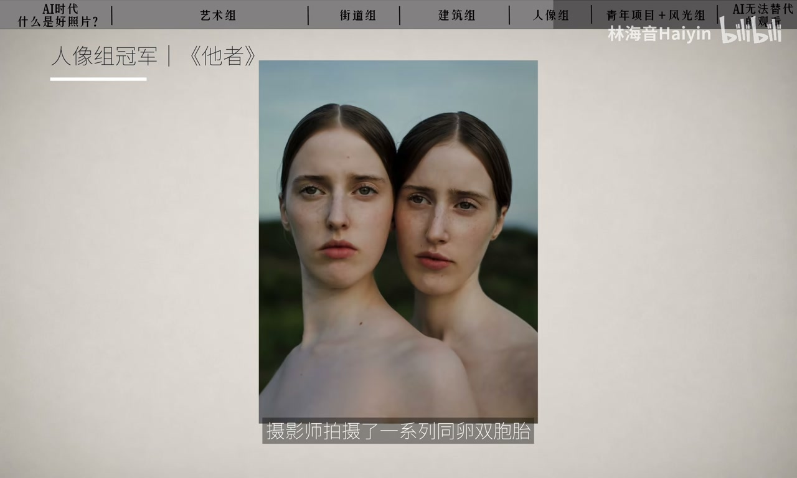
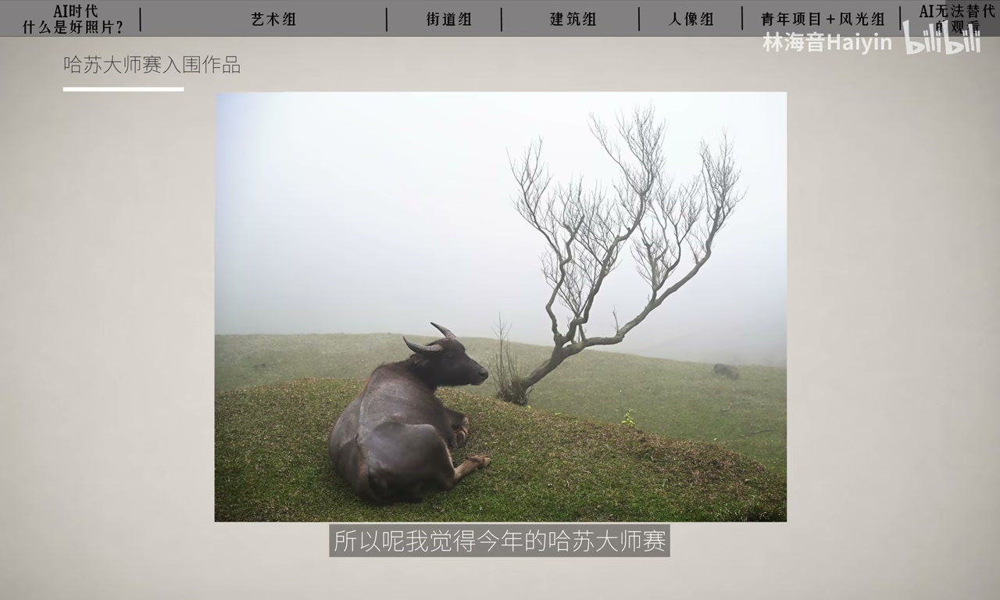

内容要点
林海音借哈苏大师赛近作讨论：当 AI 随手能生成「完美照片」，评委青睐从炫技奇观转向故事、人文甚至哲学追问。她细读艺术组垃圾殖民的做减法、街头与建筑的克制叙事、人像《他者》的身份问题，最后把标准拉回——难替代的是观看方式与按下快门的理由。
知识结构
炫技奇观退潮；故事人文哲学更易获青睐。
牛背如山：垃圾殖民主题的局部呈现。
清晨市集旁观；建筑组手电筒合成思乡。
《他者》双胞胎；青年与风光也在讲长期观看。
好看可生成；好照片是打动你的瞬间。
精致与奇观正在贬值；AI 时代更值钱的是你看见了什么关系、为什么要记录——别用考试心态追标准答案。
00:00-01:10好照片的标准正在改写
开场点题：AI 随便能生成完美照片，好照片标准是否已变？以摄影界「奥斯卡」哈苏大师赛近年获奖为样本——两年一度，汇聚顶尖选手与机构评委。
人话总结：追求炫技大片、奇观化宏大叙事、纯视觉刺激的作品不再主流；在艺术性之上具备故事性、人文性乃至哲学追问的作品更易获青睐。00:40 出镜句可对上。

01:10-02:20艺术组：垃圾殖民的做减法
最深印象是艺术组环保主题：画面克制，几头牛背重叠如起伏山峰。对比想象中的垃圾山全景或破衣居民，摄影师选择局部。作品源于印尼填埋场总被迅速填满、垃圾车进不来的日常，再追到发达国家向东南亚转移垃圾、城市向郊外转运的「垃圾式殖民」。
精彩在于做减法的呈现与牛背线条的艺术性——「这背后的思维反而是 AI 没法取代的」。01:25 三帧作品是证据。

02:20-03:50街头与建筑：克制里的叙事
街道组不再默认布列松式决定性瞬间的强张力；《清晨市集》一类作品拍荷兰日常集市，雾中蓝色寂静，远处一点灯，远远旁观，安静却有故事，像留白后的高级感。
建筑组《日间沉睡者》也非强几何奇观：摄影师亲人去世后返乡，发现熟悉之地荒芜，深夜用手电分段照亮再合成——拍的是对故乡的回忆。克制不等于没技术，而是不让人一眼看出在炫技。

03:50-05:10人像《他者》与长期观看
人像组多故事与人文关怀。冠军《他者》拍同伴双胞胎，相似又不同，逼出「我是谁」以及人如何被感知与定义——双胞胎成为探索身份的切入点。04:05 双人肖像是本段锚点。
共性：牛与垃圾山、建筑与社区、双胞胎与共享身份、摊贩与城市——重点不是对象多美多稀奇，而是要表达的关系与故事。青年项目 14 岁作者用黑水摄影谈海洋保护；风光组则是年复一年等天气，并对比曾多次重走青藏铁路海选底片的长期劳动。

05:10-06:05回到按下快门的理由
启发：AI 时代摄影最重要的可能不只是好看——好看很容易生成；真正难替代的是一个人如何观看世界，以及为什么想记录这一刻。
也提醒：每个影赛有自己的标准，别带着考试心态拍照；回到最初意义，忘记条条框框，单纯记下打动你的瞬间——对你来说那就是一张好照片。

完整转录（174段）
以下文本由 Whisper medium 模型自动转录，可能存在少量识别误差，已尽可能修正。
当我们已经进入了一个用AIS随便都能生成一张完美照片的时代
当下
一张好照片的标准是不是已经悄悄发生了改变呢
那摄影界的奥斯卡奖哈苏大师赛
在前段时间公布了2020年获奖作品
所以今天我想来聊聊这件事儿
在这个两年一度的摄影大赛
复习了全球顶尖的参赛选手和来自全国艺术机构的评委
随着他的获奖作品也能看出当下
对于一张好照片的标准确实有所变化
那如果你想省略用最简单的人话来总结就是
追求炫技的大片
奇观化的宏大叙事的作品
强调视觉层面的刺激的照片
已经不再占据主流地位
那反之
那些在画面有艺术性的基础上
具备故事性和人文性
甚至具有哲学思考和追问的作品
则更容易获得青睐
那今年一共有7个参赛类别
我想来聊聊我最感兴趣的几组作品
首先呢我印象最深的是这个艺术组的
垃圾市殖民这组照片
那这个组别的入围作品都非常天马行空
也是你能够看到很明显的
PS后期的一个参赛类别
那恰恰是这样一个类别
我第一眼的感受就是
其实这类型的很多作品
现在都已经完全可以用AI生成了
那我们来看一下这个获奖作品
第一眼看上去呢
这个画面非常的克制
几头牛背互相重叠
像一组作起伏的山峰
那这其实是一个环保主题的作品
那假设你想象一下
如果是你要来拍一个环保主题
你会怎么拍
成片的垃圾停摆场
远景镜头
还是当地居民和牛
在这个环境里浑身破破烂烂的样子
那我们来看看摄影师是怎么拍的
那这个作品源于他的日常生活
就他发现印尼的一处垃圾停摆场
总是很快就被填满了
那有的时候垃圾车甚至进不来
垃圾就会堆积一周
散发出臭味
那进一步研究后
他发现这其实不仅仅是一个当地问题
而是全球性的垃圾殖民主义
那一些发达国家不愿意处理自己的垃圾
于是会把垃圾运往
印度尼西亚
马来西亚
菲律宾等的国家
而这样的剥削不仅仅是国家之间
在城市之间也同样存在
城市里的垃圾会被运往郊外
牛群在垃圾中寻找食物
那这就是这组作品的呈现方式
我觉得这也是这个作品最精彩的地方
就是摄影师他没有去拍那种很壮观的垃圾衫
或者是生活在这个环境里的居民
而是用做剪法的方式去做了一个局部的呈现
牛背的线条也是很具有艺术性
这背后的思维反而是AI没有办法取代的
我们再来看一下街道组
以前我们提到街头作品
所有人都会想到布列松的决定性瞬间
补充一个充满自己张力的画面
这样的作品也是可以第一眼就很抓人眼球的
但是如果讲作品《清晨一世》
他拍的是荷兰街头最日常的集市
博物笼罩着城市
整个街道呈现出蓝色的寂静感
只有小摊上亮起了一点灯光
那毫无疑问这是一组很克制的作品
摄影师并没有走进去拍那种很有张力的人物动作
而是远远的旁观去安静的呈现一个角落
它会让我联想到分花忽朴的画
同样的安静但并不无聊
因为它画面非常的有故事感
所以我们可以说这是经过克制之后
所呈现出来的一种留白的高级感
建筑组 日间沉睡者
来摘一看也不是那种非常有视觉奇观的照片
那我们以前想到那种建筑的优秀作品
我忘了都是很有强烈的几颗空间感
线条感 光影感的作品
那确实在入轨的候选作品里你能看到
但是评委选出来的这组照片
它的背景是
摄影师在附近去世后回到故乡
发现曾经熟悉的地方都已经变得荒芜
于是用镜头记录下被遗忘的建筑
他在深夜用手电筒一点点照亮建筑的各个部分
再通过后期合成一张完整的作品
所以他拍的不仅仅建筑
而是他对故乡的回忆
所以这组作品也很克制
但是克制并不代表他没有用到很复杂的摄影技术
而是他不会让你一眼就意识到
这个照片其实还挺花工夫的
他不是在炫技
而是在述说一个带有私人情感的思乡的故事
来说说人像组
这次入围的作品中有很多充满故事性和人文关怀的作品
其实有很多我都还蛮喜欢的
《冠军他者》
乍一看依然是一个做剪版的作品
这组作品受到心理学和哲学的启发
摄影师拍摄了一系列同伴双胞胎
当我们看到照片中如此相似
但又不同的两个人
会不由自主地产生万有身份的追问
问出哲学上最经典的问题
我是谁
摄影师希望观众思考我们与他人的关系是什么
一个人的存在
一个人会被感知
一个人会被定义
双胞胎之间既相似又不同的关系
恰好成为来探索身份的牵入口
其实你会发现
这次的很多获奖作品都有着很强烈的叙事性
牛与垃圾山
建筑与社区
双胞胎与共享身份
摊贩与城市
他们的重点都不是这个拍摄对象有多美有多稀奇
而是你通过这个拍摄对象
你想要表达什么关系和故事
如果我们只是把目光局限于拍摄对象本身有多美
毫无意外就会变成拍风光的
我们就跑去那种普通人抵达不了的远方
去拍个奇观
又或者拍人像的
去找那种特别牛逼的模特
这个显然已经不是当下这个影赛的标准了
青年项目
他的冠军是一个14岁的少年摄影师
他拍了一系列黑水摄影的作品
他希望可以用影像展现海洋的美丽
并推动海洋保护
风光组顺其之向
他的作者花了非常多的时间研究天气规律
年复一年 日复一日的等待合适的景象出现
这让我想到2023年风光组的冠军
中国摄影师楚维明的作品
他做了40多趟青藏铁路
拍了10万多张底片
最终选择了三张参赛
这些照片不只是大自然的重要景象
也是一个摄影师长期观察世界的展示
所以我觉得经典的哈苏大师赛给我们启发就是
在AI时代
摄影最重要的可能不只是拍的好看
因为好看的画面
AI也可以很容易就生成
真正难以替代的是一个人如何观看世界
以及他为什么想要记录这一刻
当然每个摄影赛事都有自己的评价标准
我觉得也不要带着考试的心态去拍照
作为摄影爱好者
比起追求所谓的标准答案
更重要的是回到摄影最初的意义
也就是我们在按下快门的时候
可以去忘记那些条条框框
只是去单纯的记录下打动你的那些瞬间
而这对你来说就是一张好照片